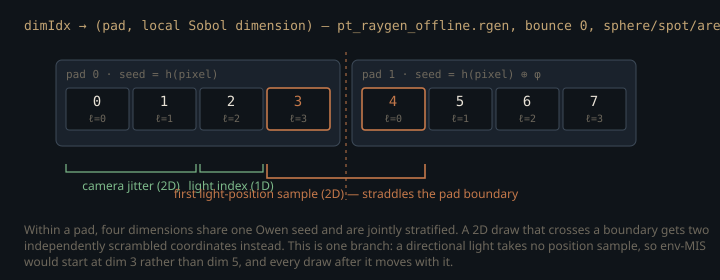

Monograph · Tree · ← Module hub · Sampler API
sampling
Sampler API
sampler_api.glsl dispatch, specialization constant.
One name, two different contracts
`pt_raygen_realtime.rgen` asks for randomness at forty distinct call sites and `pt_raygen_offline.rgen` at twenty-nine — pixel jitter, light index, area-light point, environment direction, BSDF lobe choice, Russian roulette — and every one of them goes through `getSample1D(dim)` or `getSample2D(dim)`.
Those two are the shaders that run. `PathTracerShaderSet` still *defaults* to a third, `rt_pt_raygen.rgen.spv`,
const char* raygenSpv{"bin/shaders/rt_pt_raygen.rgen.spv"};ohao/render/rt/path_tracer.hpp:55but the engine's only `PathTracer` is a member of `RTProfileRendererBase`, whose `init()` overwrites the whole shader set before the pipeline is built,
m_pathTracer.setShaderSet(m_shaderSet);ohao/render/rt/rt_profile_renderer.hpp:99and the only two subclasses of that base name the realtime and offline variants. `rt_pt_raygen.rgen.spv` is compiled and never loaded. Everything below traces `pt_raygen_offline.rgen` unless it says otherwise.
"bin/shaders/rt_pt_raygen_realtime.rgen.spv",ohao/render/rt/rt_profile_renderer.hpp:205"bin/shaders/rt_pt_raygen_offline.rgen.spv",ohao/render/rt/rt_profile_renderer.hpp:220What sits behind that one function name are two implementations whose contracts are not the same, and an integrator written to a discipline that only one of them enforces.
`sampler_pcg.glsl` is a **stream**. A single `uint` state is advanced by an LCG step and a bit-mixing output function on every call; the `dim` argument is accepted and thrown away, so the value you receive depends entirely on how many times this invocation has already asked.
float getSample1D_pcg(uint dim) {shaders/includes/rt/sampler_pcg.glsl:20`sampler_sobol.glsl` is a **lookup**. `samplerInit_sobol` records the sample index and a hash of the pixel coordinate, and then nothing mutates for the rest of the ray: each returned value is a pure function of (pixel, sample index, dimension).
_sobol_index = sampleIdx;shaders/includes/rt/sampler_sobol.glsl:61That is why each raygen threads a `dimIdx` counter by hand, bumping it by exactly the number of scalars consumed at every site. Under PCG the bookkeeping is decoration — drop a `dimIdx += 2u` and the image is bit-identical. Under Sobol the same omission makes two unrelated decisions read one coordinate, and the estimator acquires a correlation no sample count will average out. The counter is load-bearing in exactly one of the two configurations: a bug that is invisible in the mode you were debugging in.
What the dim argument actually buys
The committed direction-number table holds four Sobol dimensions.
const uint OHAO_SOBOL_DIMS = 4u;shaders/includes/rt/sampler_sobol_tables.glsl:8A single camera path spends far more than four, so the Sobol backend reads `dim` as a two-part address: the high bits pick a *pad*, the low two bits pick the local Sobol dimension inside it, and each pad is re-scrambled with its own Owen seed derived from the pixel hash and the golden-ratio constant `0x9e3779b9`.
uint seed = _sobol_pixelSeed ^ (pad * 0x9e3779b9u);shaders/includes/rt/sampler_sobol.glsl:71Inside one pad, four dimensions are jointly stratified. Across pads you get independence instead — the standard trade in padded QMC, on the assumption that the integrand's important dimensions come early.
The API-visible consequence is that `getSample2D(d)` is not a 2D primitive: it is `getSample1D(d)` paired with `getSample1D(d+1)`, so a 2D draw that starts at `d ≡ 3 (mod 4)` lands one component in each of two pads and loses the joint stratification it looks like it is asking for. This is not hypothetical. The camera jitter takes dims 0–1,
vec2 jitter = getSample2D(dimIdx) - 0.5;shaders/rt/pt_raygen_offline.rgen:145the bounce-0 next-event-estimation block spends dim 2 on the light index, and the light-position sample inside it therefore begins at dim 3 — split across pads 0 and 1.
// ==== Analytic direct NEE at bounce 0 ====shaders/rt/pt_raygen_offline.rgen:310That is a trace of one path, not a fixed map. The whole NEE block is gated on a non-empty light buffer; inside it the sphere, spot and area branches each take two dimensions for the light point while the directional branch takes its direction straight from the light and consumes none; and the env-MIS draw that follows is itself gated on a loaded environment map. So the environment sample starts at dim 5, dim 3 or dim 2 depending on the scene and on which light type this particular path drew.
// ==== Analytic direct env-MIS at bounce 0 ====shaders/rt/pt_raygen_offline.rgen:505
The pads move at runtime, not just at edit time
`dimIdx` is a running count, not an allocation, so any branch that consumes a different number of dimensions shifts every later draw *of that path* into a different pad. The clearest case is the specular direction chosen at the primary hit: a surface with `roughness > 0.01` spends two dimensions jittering the mirror direction,
if (roughness > 0.01) {shaders/rt/pt_raygen_offline.rgen:585and two more if the jittered direction ends up below the horizon.
if (dot(reflected, N) < 0.0) {shaders/rt/pt_raygen_offline.rgen:589Russian roulette then terminates paths at different depths, so how many dimensions a path has spent by bounce 3 is a function of its own history.
float p = max(specThroughput.r, max(specThroughput.g, specThroughput.b));shaders/rt/pt_raygen_offline.rgen:835What padded Sobol buys is stratification along a pixel's *sample sequence*: for a fixed dimension, that pixel's samples 0…N−1 form a low-discrepancy set. That only means anything if dimension *d* denotes the same decision on every sample, and here it does not — which light, and therefore which light type, is drawn from dim 2; the horizon-reject test is decided by the jitter sample itself; roulette ends different samples at different depths. Past the first data-dependent branch, one sample's dimension *d* is a light point and another's a specular jitter, sharing one low-discrepancy sequence. What is stable across a pixel's samples is dims 0–2 — camera jitter and the light index — which is the short end of the prefix the padded-QMC assumption leans on. Nothing after it is protected, and no `dimIdx` discipline in the source can protect it.
A specialization constant, not a uniform
The dispatch itself is three thin functions — `samplerInit`, `getSample1D`, `getSample2D` — each a single comparison against `SAMPLER_TYPE`.
float getSample1D(uint dim) {shaders/includes/rt/sampler_api.glsl:29Two alternatives were available. A push constant or UBO field would make the sampler switchable per frame, at the price of a genuine dynamic branch at every sample site with both backends' state live. Two preprocessor variants (`-DSAMPLER_PCG`) would cost nothing at runtime but double the shader build and leave two SPIR-V blobs that can drift apart. OHAO uses a Vulkan specialization constant instead: one GLSL source, one `.spv` on disk, and a branch whose condition is fixed when the pipeline is created — so the driver's SPIR-V compiler folds it, and the loser's code is dead before the first ray is traced.
The GLSL declares `constant_id = 0` with a compile-time default of Sobol, and the host names the same id as a `constexpr`.
layout(constant_id = 0) const uint SAMPLER_TYPE = SAMPLER_SOBOL;shaders/includes/rt/sampler_api.glsl:16inline constexpr uint32_t kSamplerSpecConstantId = 0;ohao/render/rt/sampler_types.hpp:17The *values* are a different matter. `SamplerType::PCG = 0, Sobol = 1` on the host and `SAMPLER_PCG 0u` / `SAMPLER_SOBOL 1u` in the GLSL are two independently hand-written literal pairs.
PCG = 0, // pseudo-random; realtime defaultohao/render/rt/sampler_types.hpp:13#define SAMPLER_PCG 0ushaders/includes/rt/sampler_api.glsl:12There is no generated header, no `static_assert`, and no test that compares the two — the one engine test that touches this header asserts only that `isQmcSampler` picks out Sobol. Renumbering the enum would compile, link, run, and silently select the other backend.
EXPECT(isQmcSampler(SamplerType::Sobol) && !isQmcSampler(SamplerType::PCG), "QMC");tests/engine/engine_tests.cpp:650The stage that gets the constant, and the three that do not
`VkSpecializationInfo` is attached to stage 0 only.
stages[0].pSpecializationInfo = &samplerSpecInfo;ohao/render/rt/path_tracer_pipeline.cpp:88That is correct today: the only files that `#include` `sampler_api.glsl` are the three raygen shaders, and `pt_miss.rmiss`, `pt_closesthit.rchit` and `pt_anyhit.rahit` make no sampler calls at all. It is also a trap with no diagnostic. The stage array is zero-initialised, so the miss and hit stages carry a null `pSpecializationInfo`: a sampler call added to the closest-hit shader would compile, link and run on the GLSL *default* — Sobol — whatever the host asked for, with raygen and hit shader drawing from two different generators.
Baked once, at pipeline creation
The value that reaches SPIR-V is read from the tracer's settings at the moment the pipeline is built,
uint32_t samplerTypeVal = static_cast<uint32_t>(m_renderSettings.samplerType);ohao/render/rt/path_tracer_pipeline.cpp:80and `PathTracer::setRenderSettings` — which does reallocate render targets when the DLSS render scale moves — never recreates the RT pipeline. So `samplerType` is not a runtime knob: it is a constructor argument in disguise. Worse, at the instant it is read `m_renderSettings` is still the member's own default,
RTRenderSettings m_renderSettings{kOfflineRTSettings};ohao/render/rt/path_tracer.hpp:265because the profile wrapper calls `PathTracer::init()` — which builds the pipeline — and only then pushes its own settings down.
if (!m_pathTracer.init(device, physicalDevice, width, height,ohao/render/rt/rt_profile_renderer.hpp:100m_pathTracer.setRenderSettings(m_settings);ohao/render/rt/rt_profile_renderer.hpp:106Every pipeline the `PathTracer` creates is therefore specialized to Sobol, including the realtime profile's, whose settings table asks for PCG. (The two other RT pipelines in the engine, in `RTShadowTechnique` and `RTGITechnique`, attach no `VkSpecializationInfo` at all — none of their shaders pulls in `sampler_api.glsl`, so they have no `SAMPLER_TYPE` to specialize.)
.samplerType = SamplerType::PCG,ohao/render/rt/rt_settings.hpp:46Nothing renders wrong — Sobol is unbiased — but the sampler selector is a field that is stored and never applied, and this API exposes no way to change the answer after `init`. (*Profiles and meta* works the same ordering from the settings side.)
The half-open interval only one backend keeps
Sobol takes the top 24 bits of the scrambled word and scales by $2^{-24}$, which lands exactly on a float32 grid and is provably below 1.
return float(scrambled >> 8) * (1.0 / 16777216.0);shaders/includes/rt/sampler_sobol.glsl:75PCG divides the whole 32-bit word by $2^{32}$ instead.
return float(_pcg_next()) / 4294967296.0;shaders/includes/rt/sampler_pcg.glsl:21Float32 spacing just below $2^{32}$ is 256, so unsigned words within 128 of $2^{32}$ round *up* to it and the quotient is exactly 1.0. The two backends therefore return samples from different intervals — $[0,1)$ for Sobol, $[0,1]$ for PCG — through the same function signature. In the raygens this is absorbed rather than prevented: the NEE light index is computed as `uint(u * lightCount)` and immediately clamped with `min(selectedLightIdx, lightCount - 1u)` at every light-selection site — three of them in `pt_raygen_offline.rgen`, four in `pt_raygen_realtime.rgen` — so a returned 1.0 costs a slightly biased light choice rather than a read past the end of the light SSBO.
`dim` is not a hint. Under Sobol it *is* the sample's identity — and `dimIdx` is a running count, so which pad a draw lands in moves for two different reasons: adding, removing or reordering a sampling site shifts every later draw in the source, and a directional light, a mirror-smooth surface or an early Russian roulette exit shifts them at runtime, per path.
Contracts
- `samplerInit` must run before any `getSample*` in an invocation: under Sobol it sets the sample index and pixel seed, under PCG the stream state. There is no default-initialised fallback.
- `getSample2D(d)` consumes dims `d` and `d+1`; the caller must advance `dimIdx` by 2. A missed increment is a no-op under PCG and a correlation bug under Sobol.
- The specialization constant is attached to the raygen stage only. Any sampler call added to a miss, closest-hit or any-hit shader gets the GLSL default (Sobol) with no warning.
- `SamplerType`'s numeric values and the `SAMPLER_PCG`/`SAMPLER_SOBOL` defines are two hand-written literal pairs with no cross-check. Renumber one and the GPU silently runs the other backend.
- The sampler is fixed at `PathTracer::init()`. Changing `samplerType` afterwards updates the struct and nothing else; a real switch needs pipeline recreation.
- PCG can return exactly 1.0, Sobol cannot. Any consumer mapping a sample onto an array index must clamp.
- `sampler_sobol.glsl` claims in a comment to mirror `owen_scramble.cpp` byte-for-byte, and `sampler_sobol_tables.glsl` duplicates the CPU direction numbers. The CPU side is unit-tested against Joe-Kuo reference points; nothing tests that the GLSL port still agrees. Divergence shows up as slower convergence, not as a failure.
Source files
ohao/render/rt/path_tracer.hppohao/render/rt/rt_profile_renderer.hppshaders/includes/rt/sampler_pcg.glslshaders/includes/rt/sampler_sobol.glslshaders/includes/rt/sampler_sobol_tables.glslshaders/rt/pt_raygen_offline.rgenshaders/includes/rt/sampler_api.glslohao/render/rt/sampler_types.hpptests/engine/engine_tests.cppohao/render/rt/path_tracer_pipeline.cppohao/render/rt/rt_settings.hppParent hub for the full pipeline narrative; this page is the file-level design unit. Sitemap · hover glossary terms anywhere.